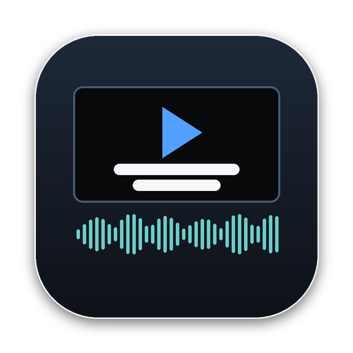

Language conform and QC for subtitle deliveries, with a frame-accurate player that plays ProRes, H.264 and HEVC.
Double-click it in your Downloads folder.
The app isn't signed with an Apple Developer ID, so macOS asks once.
macOS 13 and 14: right-click the app, choose Open, then Open again.
macOS 15: open it once (it will be blocked), then go to System Settings › Privacy & Security and click Open Anyway.